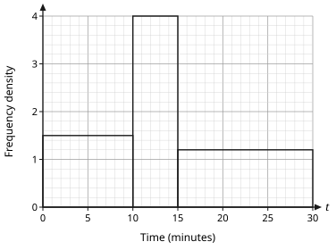
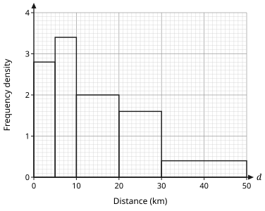
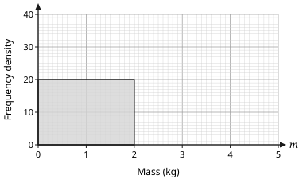
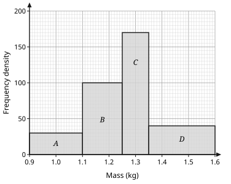

<script src="/assets/redirect.js"></script>
<section class="theory" data-section="IGCSE-20.1">
<h2>20.1 Histograms</h2>
<p class="src">Based on Cambridge IGCSE Mathematics Core and Extended Coursebook (Karen Morrison and Nick Hamshaw), Chapter 20. The wording is original and follows the published section titles and the standard Cambridge IGCSE treatment of the topic. Printed pp.673–679.</p>
<p class="key-words"><strong>Key words:</strong> <em>histogram</em>, <em>frequency density</em>, <em>class width</em></p>
<h3>Area represents frequency</h3>
<p>A histogram shows grouped continuous data. The columns touch, and each column stands on its class, from the lower boundary to the upper boundary. When the classes have different widths, the height of each column is the frequency density, not the frequency:</p>
<p>\[\text{frequency density}=\dfrac{\text{frequency}}{\text{class width}}.\]</p>
<p>Then the area of each column is equal to the frequency of its class. A wide class with a large frequency does not look too important just because it is wide.</p>
<div class="ms-widget" data-widget="fd-histogram"></div>
<script src="../../assets/widget-kinds-pkg15.js"></script>
<h3>Reading a histogram</h3>
<ul>
<li>The frequency of a class is the frequency density multiplied by the class width.</li>
<li>To estimate how many values lie in part of a class, assume that the values are spread evenly through the class, and use the part of the column that you need.</li>
<li>Always read the scale on the frequency density axis carefully, because the grid squares may not stand for whole numbers.</li>
</ul>
<div class="worked-example">
<h4>Worked example 1: Drawing a histogram</h4>
<p class="src">Coursebook, 20.1, frequency density for unequal classes. New numbers.</p>
<p>The times, \(t\) minutes, taken by 53 students to finish a puzzle are grouped as \(0&lt;t\le10\) (15 students), \(10&lt;t\le15\) (20 students) and \(15&lt;t\le30\) (18 students). Find the frequency densities and draw the histogram.</p>
<ol class="steps">
<li>Class widths 10, 5 and 15. <span class="mark">B1</span></li>
<li>Frequency densities \(\dfrac{15}{10}=1.5\), \(\dfrac{20}{5}=4\) and \(\dfrac{18}{15}=1.2\). <span class="mark">M1</span></li>
<li>Columns of heights 1.5, 4 and 1.2 drawn on the classes. <span class="mark">A1</span></li>
</ol>
<p class="final"><strong>Answer:</strong> frequency densities 1.5, 4 and 1.2</p>
</div>
<figure></figure>
<div class="worked-example">
<h4>Worked example 2: Part of a class</h4>
<p class="src">Coursebook, 20.1, estimating from a histogram. New numbers.</p>
<p>A histogram has a column for the class \(20&lt;m\le50\) with frequency density 0.8. Find the frequency of this class, and estimate how many of these values are greater than 40.</p>
<ol class="steps">
<li>Frequency \(=0.8\times30=24\) <span class="mark">B1</span></li>
<li>From 40 to 50 the width is 10, so the estimate is \(0.8\times10\). <span class="mark">M1</span></li>
<li>\(=8\) <span class="mark">A1</span></li>
</ol>
<p class="final"><strong>Answer:</strong> \(24\); about \(8\)</p>
</div>
<h3>Common mistakes</h3>
<ul>
<li>Using the frequency as the height of a column when the class widths are not equal.</li>
<li>Reading the frequency from the height of a column without multiplying by the class width.</li>
<li>Using the wrong class width, for example 9 instead of 10 for the class \(10&lt;t\le20\).</li>
</ul>
<h3>Past paper</h3>
<p class="src">0580/43/M/J/25 Q24, official QP and official MS.</p>
<p>The histogram shows information about the distance some people travel to work.</p><figure></figure><p>(a) Use the histogram to complete the table.</p><table><thead><tr><th style="white-space:normal">Distance (\(d\) km)</th><th style="white-space:normal">Number of people</th></tr></thead><tbody><tr><td>\(0&lt;d\le 5\)</td><td></td></tr><tr><td>\(5&lt;d\le 20\)</td><td></td></tr><tr><td>\(20&lt;d\le 50\)</td><td></td></tr></tbody></table><p>[3]</p><p>(b) The people who travel a distance greater than 35 km to work have a car allowance.</p><p>Calculate an estimate of the number of these people who have a car allowance. [1]</p>
<details><summary>Mark scheme</summary>
<ol class="steps">
<li>(a) \(0&lt;d\le 5\): \(2.8\times5=14\) <span class="mark">B1</span> Official MS: B1 for each correct answer: 14.</li>
<li>(a) \(5&lt;d\le 20\): \(3.4\times5+2\times10=37\) <span class="mark">B1</span> Official MS: B1, 37.</li>
<li>(a) \(20&lt;d\le 50\): \(1.6\times10+0.4\times20=24\) <span class="mark">B1</span> Official MS: B1, 24.</li>
<li>(b) From 35 km to 50 km the frequency density is 0.4, so \(0.4\times15=6\). <span class="mark">B1</span> Official MS: 6, 1 mark.</li>
</ol>
</details>
<h3>Past paper</h3>
<p class="src">0580/41/O/N/25 Q25, official QP and official MS.</p>
<p>Kai sorts parcels into two types, light and heavy.</p><table><thead><tr><th style="white-space:normal">Type of parcel</th><th style="white-space:normal">Mass (\(m\) kg)</th></tr></thead><tbody><tr><td>Light</td><td>\(0&lt;m\le 2\)</td></tr><tr><td>Heavy</td><td>\(2&lt;m\le 5\)</td></tr></tbody></table><p>The histogram shows some information about the number of parcels Kai sorts in one day.</p><figure></figure><p>(a) Find the number of light parcels. [1]</p><p>(b) There are 102 heavy parcels.</p><p>Complete the histogram. [2]</p>
<details><summary>Mark scheme</summary>
<ol class="steps">
<li>(a) \(20\times2=40\) <span class="mark">B1</span> Official MS: 40, 1 mark.</li>
<li>(b) Frequency density \(=\dfrac{102}{5-2}=34\): draw a column from 2 to 5 with height 34. <span class="mark">B2</span> Official MS: correct column, from 2 to 5 and height 34, 2 marks; or M1 for 102/(5 − 2).</li>
</ol>
</details>
<h3>Past paper</h3>
<p class="src">0580/42/O/N/25 Q16, official QP and official MS.</p>
<p>The histogram shows information about the masses of some coconuts. The masses are classified into four categories \(A\), \(B\), \(C\) and \(D\).</p><figure></figure><p>(a) Show that there are 10 coconuts in category \(D\). [1]</p><p>(b) Two of the coconuts from those in category \(C\) and category \(D\) are chosen at random.</p><p>Find the probability that both are from category \(D\). [3]</p><p>(c) Calculate an estimate of the mean mass of the coconuts. [4]</p>
<details><summary>Mark scheme</summary>
<ol class="steps">
<li>(a) \((1.6-1.35)\times40=10\) <span class="mark">B1</span> Official MS: (1.6 – 1.35) oe × 40 [= 10], 1 mark.</li>
<li>(b) Category \(C\) has \(170\times0.1=17\) coconuts, so the probability is \(\dfrac{10}{10+17}\times\dfrac{9}{9+17}\). <span class="mark">M2</span> Official MS: M2 for 10/(10 + 170 × 0.1) × 9/(9 + 170 × 0.1) oe, or M1 for 10/(10 + 17) or 9/(10 + 16) or 9/(10 + 17) or 10/(10 + 16) oe seen, or 10/k × 9/(k − 1) oe with k &gt; 10 and an integer, or m/(10 + 17) × (m − 1)/(10 + 16) oe with 0 &lt; m &lt; 27 and an integer.</li>
<li>(b) \(\dfrac{10}{27}\times\dfrac{9}{26}=\dfrac{5}{39}\) <span class="mark">A1</span> Official MS: 5/39 oe, 3 marks.</li>
<li>(c) Frequencies \(6\), \(15\), \(17\) and \(10\). <span class="mark">M1</span> Official MS: M1 for frequencies 6, 15, 17 soi.</li>
<li>(c) Mid-values \(1\), \(1.175\), \(1.3\) and \(1.475\). <span class="mark">M1</span> Official MS: M1 for midpoints soi (1, 1.175, 1.3, 1.475).</li>
<li>(c) \(\dfrac{6\times1+15\times1.175+17\times1.3+10\times1.475}{48}\) <span class="mark">M1</span> Official MS: M1 for use of their Σfm ÷ their Σf with m in correct interval including both boundaries.</li>
<li>(c) \(1.26\) kg <span class="mark">A1</span> Official MS: 1.26 or 1.259… nfww, 4 marks.</li>
</ol>
</details>
<div class="quick-check">
<h4>Quick check 1</h4>
<p>In a grouped frequency table, the class \(10&lt;t\le 30\) has frequency 60. Find the frequency density for this class.</p>
<details><summary>Worked solution</summary>
<ol class="steps"><li>Class width \(=30-10=20\)</li><li>Frequency density \(=\dfrac{60}{20}=3\)</li></ol>
<p class="final"><strong>Answer:</strong> \(3\)</p>
</details>
</div>
<div class="quick-check">
<h4>Quick check 2</h4>
<p>On a histogram, the column for the class \(5&lt;x\le 20\) has height 6, where the vertical axis shows frequency density. Find the frequency of this class.</p>
<details><summary>Worked solution</summary>
<ol class="steps"><li>Class width \(=15\)</li><li>Frequency \(=6\times15=90\)</li></ol>
<p class="final"><strong>Answer:</strong> \(90\)</p>
</details>
</div>
<div class="quick-check">
<h4>Quick check 3</h4>
<p>A class has lower boundary 20 and frequency 45. On a histogram, its column has frequency density 3. Find the upper boundary of the class.</p>
<details><summary>Worked solution</summary>
<ol class="steps"><li>Class width \(=\dfrac{45}{3}=15\)</li><li>Upper boundary \(=20+15=35\)</li></ol>
<p class="final"><strong>Answer:</strong> \(35\)</p>
</details>
</div>
</section>
